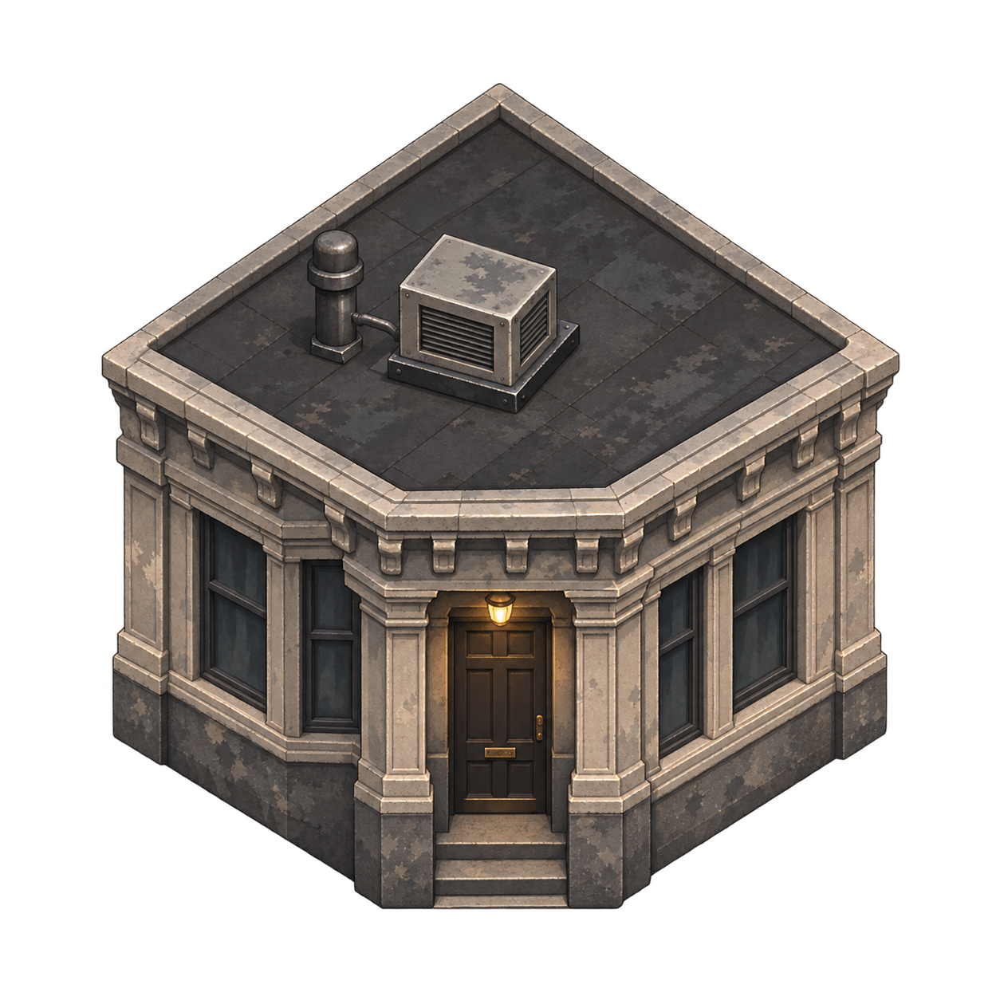

No verified wall-ground landmarks, anchor, uniform scale or world correspondence. Alpha contours are not wall contact. No source defect or fidelity approval established.
Native source pixels below: 1254 CSS pixels per image, no scene/world-scale registration implied.

Green/cyan annotations: alpha-derived contour samples, not manually established wall-ground junctions. Yellow: approximate stair-region silhouette, not ground contact. Magenta: prompt targets only, not measured geometry. Connecting segments do not establish structural junctions.
Earlier captioned PNG comparisons are withdrawn in withdrawn/: their baked-in wall-contact, chamfer and scale claims are invalid. Do not use them for registration or visual acceptance.